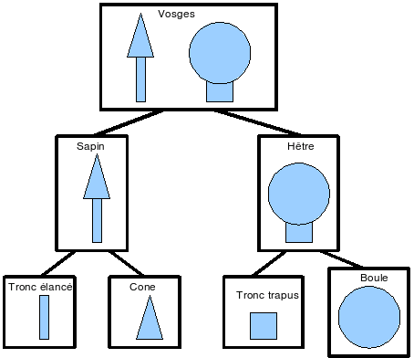

ACD1 - Canevas du TP 5 : Hiérarchie d'objets et interface
Contexte
Un graphe de scène est une structure de données
utilisée communément par les outils de
modélisation 3D et les jeux vidéo. Le graphe de
scène structure de façon hiérarchique la
représentation spatiale d'une scène graphique.
Dans ce TP, il s'agit de réaliser un graphe de scène
sous sa forme la plus simple : un arbre binaire. La racine de l'arbre
représente l'ensemble de la scène, et chacune de ses
branches correspond à une partie de cette scène.
Chaque noeud de l'arbre représente un objet, et chacune de
ses branches une partie de cet objet. Les feuilles de l'arbre sont
les atomes d'affichage : des primitives graphiques (boîte,
cylindre, demi-sphère, prisme, ...). Les autres noeuds
sont des assemblages précisant où se situe la
branche droite par rapport à la branche gauche.
Par exemple, le graphe de scène suivant représente
Laurel et Hardy façon Vosges :

Dans notre cas, les feuilles correspondent à des primitives
volumiques avec leurs paramètres géométriques
et graphiques, et les noeuds correspondent à des assemblages.
Dans chaque assemblage, on indique la position de la sous-scène
correspondant à la branche droite par rapport à la
sous-scène correspondant à la branche gauche.
Documents à remettre
- L'archive (format ZIP ou TGZ uniquement) à remettre
en fin de TP comporte :
- - le compte-rendu (versions ODT + PDF),
- - un répertoire graphescene avec uniquement les
sources (.java) du graphe de scène
réalisé,
- - le fichier MonAppli.java actualisé,
- - le paquetage graphescene.jar,
- - la documentation du paquetage graphescene,
- - une ébauche du diagramme de classes du graphe de
scène en version PDF ou papier.
Indications pour le compte-rendu
- Il est vivement conseillé de compléter le
compte-rendu au fur et à mesure de l'avancement du TP.
Ce compte rendu devrait :
- - rappeler le thème principal du TP,
- - préciser ce qui a été réalisé
dans le TP,
- - illustrer les notions de cours mises en oeuvre en s'appuyant
sur des exemples tirées du TP :
- - gestion des paquetages,
- - intérêt de l'utilisation d'une interface,
- - classes et méthodes abstraites,
- - types d'accès aux attributs et aux méthodes,
- - justifier les choix techniques (structure de la classe
Scene, gestion des couleurs, fonctionnement des
assemblages, ...).
Remise du diagramme de classes final
- Le diagramme de classes final en version papier
(imprimé ou manuscrit propre) sera à
déposer dans le casier de P. Even (entre le secrétariat
INFO et la direction de l'IUT) vendredi 29 mars à 18h30
au plus tard.
- Il comportera uniquement les classes Scene, Forme,
Boite, Cylindre, Assemblage,
Decalage, Bascule et AssemblageCompose.
- Ne pas oublier de mettre son nom.
- Attention : il s'agit d'un travail individuel. Une
solution de groupe ne sera pas prise en compte (en particulier pour
les travaux réalisés sur ordinateur.
Environnement de travail
- On utilisera l'hideux Eclipse pour ce TP.
- - Ouvrir Eclipse et créer un nouveau projet Java.
- - Intégrer les librairies externes JOGL2 et outils3d de la
façon suivante : dans la vue "Projets", clic droit sur le
projet, choisir "Build Path", puis "Add External Archives".
Pour JOGL2, ajouter les archives /usr/share/java/jogl2.jar
et /usr/share/java/gluegen2-rt.jar.
- - Les classes du graphe de scène seront
insérées dans un paquetage graphescene au
moment de leur création.
- - Le fichier MonAppli.java restera dans un paquetage par
défaut.
- - Vérifier l'installation en compilant et exécutant
MonAppli.
- - Paramétrer l'outil pour générer
automatiquement les en-têtes de fichiers, et pour forcer les
indentations à utiliser des caractères espaces et non
des tabulations (paramètrage de l'éditeur).
- - Tester dès que possible l'extraction de la documentation
Javadoc et de l'archive jar du paquetage (clic droit sur le
paquetage).
Partie 1 : Déclaration d'une scène
Ecrire une classe Scene permettant de représenter
une scène, sachant seulement qu'une scène est
affichable (voir interface disponible dans le paquetage
outils3d).
Partie 2 : Définition de primitives simples
Chaque scène, sous-scène ou primitive (en bref
n'importe quel noeud de l'arbre) est considérée comme
une instance de Scene, que l'on peut donc
afficher ().
Il y aura deux types de scènes (deux classes
dérivées) : Forme et Assemblage.
- D'abord réaliser une classe Forme comportant :
- - trois attributs privés rouge, vert
et bleu, réels sur l'intervalle [0,1]
permettant de coder une couleur,
- - une méthode colorier (double r, double v, double b)
pour modifier les valeurs des attributs,
- - et une implémentation de la méthode
afficher se contentant de changer la couleur de
tracé (faute d'en savoir plus sur la forme en question).
- Réaliser ensuite une forme Boite :
- - Une boîte a trois attributs :
largeur, hauteur et profondeur.
- - Recourir aux services de la classe Dessinateur pour
afficher les boîtes.
- - La classe MonAppli permet de tester les classes du graphe
de scène l'une après l'autre en créant
à chaque fois une scène simple que l'on visualise;
Choisir des dimensions sur l'intervalle [0,1] pour que la forme
doit risible.
- - Pour information, le repère de référence
d'une boîte est situé au centre de sa base;
la hauteur correspond à l'axe 'Y', et la profondeur
à l'axe 'Z'.
--> Prévenir l'enseignant quand c'est au point.
- La gestion des couleurs est identique pour toutes les formes.
Elle peut ainsi se faire directement dans la classe Forme.
- Le constructeur ne doit pas comporter de paramètres de
couleur (choix de conception retenu pour cette application).
- A la place, les formes seront coloriées
après les avoir construites.
- Réaliser enfin une forme Cylindre :
- - Un cylindre a deux attributs : rayon et
hauteur.
- - Le repère de référence d'un cylindre est
situé au centre de sa base;
la hauteur correspond à l'axe 'Y'.
Aucune autre forme ne devra être réalisée
à ce stade.
--> Prévenir l'enseignant quand c'est au point.
Partie 3 : Définition d'assemblages de scènes
La réalisation des assemblages s'appuiera sur les services
de la classe Dessinateur (préparation, annulation,
translation, rotation, ...).
- Réaliser une classe Assemblage comportant :
- - deux composants pouvant être des Forme ou des
Assemblage et correspondant aux branches gauche et
droite de l'assemblage,
- - une implémentation de la méthode afficher
qui consiste à appliquer l'assemblage des deux branches
de la façon suivante :
- on affiche la branche gauche,
- on prépare (graphiquement) l'assemblage,
- on assemble (méthode assembler),
- on affiche la branche droite,
- on annule l'assemblage (pour qu'il ne soit pas propagé
vers le haut de l'arbre).
- - une déclaration de la méthode assembler
qui sera par la suite spécialisée pour chaque type
d'assemblage.
--> Prévenir l'enseignant quand c'est au point.
- Réaliser et tester une classe Decalage.
- - Le décolage correspond à une translation
définie par un triplet (tx, ty,
tz).
--> Prévenir l'enseignant quand c'est au point.
- Réaliser et tester une classe Bascule.
- - La bascule correspond à une rotation définie par
un axe porté par un vecteur
(ax, ay, az) et un angle angle
spécifié en degrés.
- Réaliser et tester une classe AssemblageCompose.
- - L'assemblage composé correspond à un
enchaînement de deux assemblages (par exemple un
décalage suivi d'une bascule).
- - L'affichage de l'assemblage composé consiste à
appliquer successivement les deux assemblages composants.
- - Les branches des deux assemblages composants doivent
référencer les mêmes scènes.
--> Prévenir l'enseignant quand c'est top oint.
Partie 4 : Rétro-conception
Elaborer un diagramme UML du paquetage graphescene
réalisé.
Partie 5 : Obtention d'un graphe de scène plus complet
Le graphe de scène initial peut ensuite être
complété de nouvelles formes et d'assemblages plus
sophistiqués (en clair, interdit de s'attaquer à cette
partie tant que la première partie ne fonctionne pas).
- Du côté des formes :
- - le Cone avec trois attributs :
la hauteur, le rayon de la base et le
rayon du sommet;
- - le Prisme (moitié de boîte coupée
de l'avant en bas vers l'arrière en haut). On peut les
voir comme des triangles rectangles extrudés en largeur.
Les attributs sont les mêmes que pour les boîtes.
- - la DemiSphere avec un attribut : le rayon;
- - le Tore (anneau à section rectangulaire) avec
trois attributs :
la hauteur, le rayon intérieur et le
rayon extérieur.
- Du côté des assemblages :
- - le Moteur : il s'agit d'une bascule dont l'angle
est incrémenté à chaque appel de la
méthode afficher. L'attribut angle est
remplacé par un incrément qui indique
directement la vitesse de rotation du moteur.
- - le Piston : il s'agit d'un décalage dont
la hauteur est incrémentée d'une valeur incr
à chaque appel de la méthode afficher,
entre deux valeurs limites tymin et tymax. Ces
trois paramètres remplacent le paramètre ty
du Decalage.